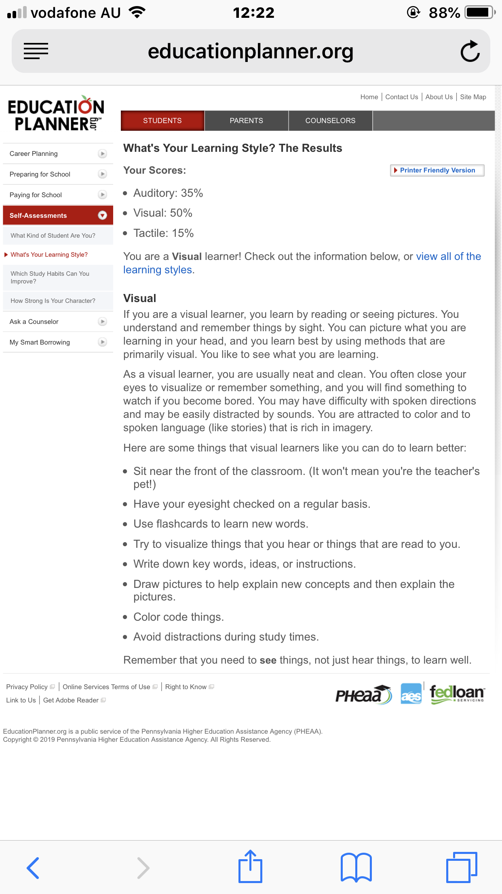
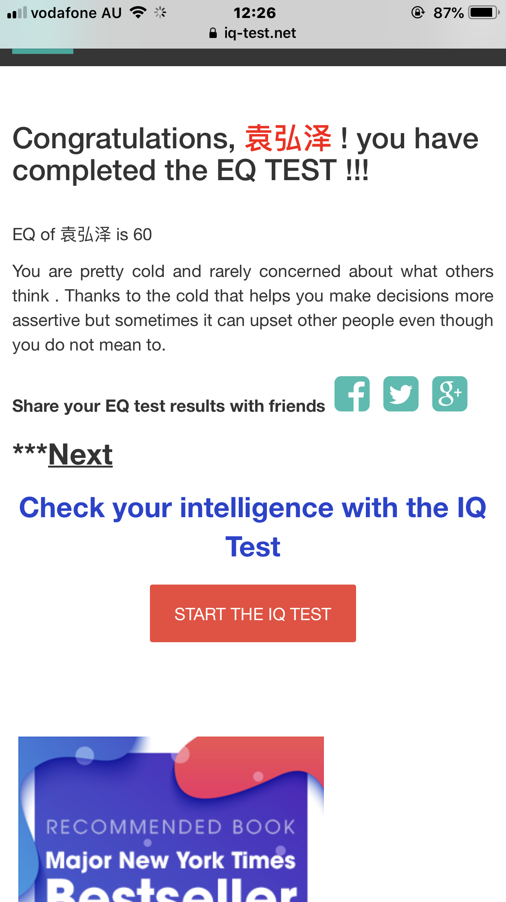
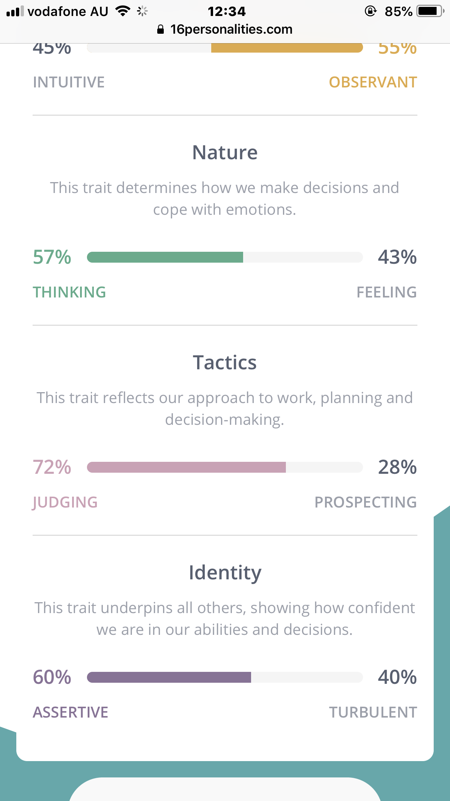

Zijun Jia
personal Information
Zijun Jia S3695944.
email:S3695944@studentrmit.edu.au
After finishing primary and middle schools in China, I finished high school in Australia.
I usually like to play the piano.
interese in IT
When I was young I have a computer with windows system When I am looking for someone to fix the computer I saw the code of one line after another. I know that the network is made up of these codes. I had an interest in it at the time. I like to write code and run it from my computer. I think that's cool.
Ideal job
https://www.seek.com.au/job/38676884?searchrequesttoken=cb83df03-50ea-4ed6-8ade-c17e2a6bce3f&type=standout
This is a front-end design career using html css javascript WordPress
Why is this position attracting me?
This is a front-end design career using html I can build a webpage And design some web page layouts
Because the company has a long history So my work can be stable Cooperation with colleagues can be harmonious
team Profile
My Myers-Briggs test result is INTJ
Introverted: slight
Intuition: slight
Thinking: slight
Judgment: medium
The result of my online learning style test is
Auditory: 35%
Visual: 35%
Tactile: 30%
My psychometric test
{You love interacting with people and do so with empathy, patience and understanding. You value respect ,
loyalty and patience and enjoy engaging with people on an authentic
and human level as you understand the positive impact you can have on people.
You connect with people easily ad it’s as rewarding for you as it is for them.}
These tests show that I am good at analyzing and judging. You can grasp the work items from the whole. Strong thinking ability. But I may give me a bad plan to waste my time.
My learning ability is relatively average. I can learn knowledge in a variety of ways. But it may not be possible to learn from one aspect. Learning from one aspect will make me bored.
Tested in my heart. Let me work in harmony with my colleagues. And learn the advantages of others. So form a team. I can analyze work items in the team. But I may give a lot of work to my teammates. Give teammates a lot of pressure. So I am not suitable as a group leader.
I can help my teammates learn new things in the group.
https://s3695944.github.io/oscar.github.io/
https://github.com/s3695944/oscar.github.io/blob/master/index.html
Qianyu Teng
personal Information
Hey，I'm Qianyu Teng，a student who study with RMIT University in Melbourne. My RMIT ID is s3768118, you can contect me with my Email address: s: s3768118@student.rmit.edu.au. My. My date of birth is 17th December, r, 1997. My fir first language is Chinese and English is my second language(Not good enough-.-). About my hobbies, I paly Chinese chess and Video games usually, It's good for me to leave off the steam from work and study. In fact, I am not only happy to play video games but also interest to design games.
interese in IT
What am I interest in IT
Programming is one of my favourite part in IT because typing codes make me feel satiated. When I create a web page or a program, I feel happy and be proud of myself.
When did I interest in IT start?
My first time to touch IT things When I studied at my secondary School In China, I was addicted into it totally. Only some words and symbols to create a useful and convenient program for users. That's awesome!
Was there a particular event or person that sparked my interest?
Actually, My teacher who taught me about IT in my secondary School is the person that sparked my interest of IT. I am very grateful to my teacher.
Why did I choose to come to RMIT?
I choose to com to RMIT becaese I like the learning atmosphere between students and teachers. teachers always help us to complete our works and explain detailly. It is a significant point that I choose RMIT.
What do you expect to learn during your studies?
I expect to learn some game designing during my studies. I'm curious how game program run.
Ideal job
This is the job I looking for:
JOB WEB LINK
The job offer above is find out from a Chinese company which called , it is a Chinese multinational investment holding conglomerate founded in 1998, whose subsidiaries specialise in various Internet-related services and products, entertainment, artificial intelligence and technology both in China and globally.
Tencent is the world's largest gaming company, one of the world's most valuable technology conglomerates, one of the world's largest social media companies, and one of the world's largest venture capital firms and investment corporations.
Job describe
This job is lokking for a person who response the development and technical implementation of mobile devices. It's good for me because my favourite job is programming, it's use program to create applications. In addition, mobile devices apps are popular at the moment, so this job own a good future.
Job requirement
Apply this job, I need a bachelor degree in basic, at least make myself master a programming language(C/C++/JAVA), IOS, Android, Windows Phone development experience perferred. Moreover, I need passionate about innovation and solving challenging problems.
My Level
I will complete the bachelor degree after 3 years, I have passionate about innovation and solving problems but I don't have any experience for mobile devices programming, so I need get some experience. I learning JAVA language at the moment, but not enough for work requirement.
Plan
In the situation, I need inprove my skill of programming as better as possible, after that, I need complete my bachelor degree sucessfully. Finally, I need try to develop or create some mobile devices applications to support my experience.
{kind=link}
team Profile
Alpha EQ Socieity：
EQ TEST
learning style ：
learning style test
16 personalities :
16 personalities TEST
The results of test above showing lots of information, some of tests said I am quiet usually.
In fact, I know I am always quiet, but I just prefer work and study by myself. It's not good.
It's will make my teamwork more difficult in the future, I need improve the social ability.
First, I should try to talk with others as much as possible
After that, I need listen the opiions from others carefully, try understand their talk ttally.
Finally, smile will be show the other people that I am friendly, They will like me more.
In conclusion, social ability is a big defect of me, and it's need some times to improve.
So, I should create the plan sheet to help myself to improve.
{kind=link}
{kind=link}
{kind=link}
Guanqiao Yang
personal Information
Name: Guanqiao Yang
Student Number: s3688624
Email: s3688624@student.rmit.edu.au
nationality: China
Current doing associate of Information Technology
Language can speak: Chinese, English
Hobbies: Cooking, Badminton, Video Games, Table Game
interese in IT
It could give me a feeling that I'm acturally creating something. I start learning Java was in high school. For now, I can still remember the excited I got when I finish my first Program. It was a simple calculator application. The reason why I came to Rmit. Because RMIT is located in city and I'd like to spend a lot of time in city. It also doesn't have the pressure like Monash or University of Melbourne. I'm trying to gain more skills during my study suck as learning c language and IT design.
Ideal job
Job name: Applications Consultant/Business Analyst
A primary responsibility of the role is the identification, assessment and documentation of business requirements. The position also includes creation of project-related documentation, reporting and application configuration.
https://www.jobseeker.org.au/job/54861-applications-consultant-business-analyst
Abour the Job
It required more than just programing but how to communicate with client and team which I’m good at. I also has programing background, has working knowledge of SQL, HTML, CSS, JavaScript and JQuery. This Job need to identify client’s requirement, requirement workshop and work with team.
I work as a salesman for half year and I’m current working with social network being a group manager of thousands people. Communication is not a problem for me. Also has GPA 3.75 last year and I’m going to learn more about programming in further years study to make sure I have enough knowledge for this job.
team Profile
Result of Myers-Briggs test.
If anyone can make friends with their colleagues and keep tension at bay within their team, it’s Entertainers. A fun atmosphere is important, and people with the Entertainer personality type use their strong observational and social skills to bring everyone together, shifting a souring mood if need be. Entertainers rarely want for ideas on how to make this happen, happily organizing events and activities inside and outside the workplace. Entertainers’ spontaneity, wit, and enthusiasm have no equal.
Entertainers genuinely enjoy spending time with others and getting to know them, and have a knack for making people happy, even in the most frustrating situations. A good challenge is always appreciated by Entertainer personalities, and they make wonderful and inspiring counselors, social workers, personal coaches, and consultants who improve employee or customer satisfaction.\
Myers-Briggs test
learning style test
If you are a visual learner, you learn by reading or seeing pictures. You understand and remember things by sight. You can picture what you are learning in your head, and you learn best by using methods that are primarily visual. You like to see what you are learning.
As a visual learner, you are usually neat and clean. You often close your eyes to visualize or remember something, and you will find something to watch if you become bored. You may have difficulty with spoken directions and may be easily distracted by sounds. You are attracted to color and to spoken language (like stories) that is rich in imagery.
learning style test
Result of other personality test
This trait measures the extent to which you are confident in your ability to accomplish and achieve challenging tasks in the workplace. This trait assists employers to learn about your self-confidence in your ability to manage and outperform in the role. Self-confidence is one of the most important indicators for success in the workplace. Therefore, most employers regard it as one of the most important factors in making a selection decision.
Your result implies that you believe that you have the intelligence, ability and drive required to achieve successful outcomes. You are confident in your ability to overcome hurdles and difficulties along the path to accomplishing your goals in the workplace. A high score in this trait indicates to employers that you are highly employable and are likely to be successful in your role.
other personality test
The test result shows that I should have done the social work and if I have enough knowledge for the work, it should fit to me. Also I’m good at make friends with their colleagues and keep tension at bay within their team.
The result will encourage me to do more in a team work. Try to be the person to united the team together
Hongze Yuan
personal Information
Personal Information
My name is yuanhongze student number is 3672919, email is is 1216264864@qq.com.
I .
I am a Chinese, my hobby is play video games and football.
interese in IT
Interest in IT
I interesting In it since I learn it from foundation year, I interesting in database, it is really fun when I first learn it from the course.
I have a friend who also learn it in monash collage, he shock me to makes me want to learn the knowledge of it.
I choose rmit because it has youth thought, and I think that is great, I hope to learn the thought and knowledge in rmit.
Ideal job
job web link
I hope use my knowledge to finish a application.
This job need More than 2 years of development experience, familiar with commonly used data structures, algorithms,
skilled use of standard libraries such as STL.
And my knowledge is nothing, so I have to learn it from my collage, also,
I might to learn the master for better competence this job.
This job might need communicate ability and team work ability and have good analytical and problem solving ability,
can independently undertake tasks and have system progress control ability.
team Profile



I am a calm and powerful observer. In the team,
I can solve the problem of communicating contradictions and disputes,
and can analyze the teammates and give the answers after calm thinking.